컴퓨터를 잘 몰라도 괜찮습니다. 아래 세 가지만 기억하시면 됩니다.
① 작품을 여러 개 지울 때는 하나씩 지우지 말고, 체크 표시 후 ‘선택 삭제’를 쓰세요. (이유는 부록 A에 있습니다.)
② 저장 후 홈페이지가 그대로면, 1~2분 기다린 뒤 키보드 Ctrl + Shift + R 을 누르세요.
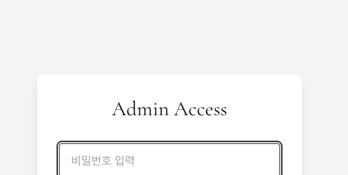
로그인하면 화면 위쪽에 메뉴 10개가 한 줄로 보입니다. 누르면 그 화면으로 바뀝니다.
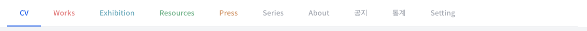
| 메뉴 | 여기서 하는 일 |
|---|---|
| CV | 학력 · 전시 · 수상 · 레지던시 같은 경력을 적습니다. |
| Works | 작품 사진을 올리고 고칩니다. 가장 많이 쓰는 화면입니다. |
| Exhibition | 전시 정보를 올립니다. |
| Resources | 작업 과정과 글을 올립니다. |
| Press | 신문기사 · 방송 소개를 올립니다. |
| Series | 작품 폴더(묶음)를 정리합니다. |
| About | 작가 이름 · 소개글 · 연락처를 적습니다. |
| 공지 | 홈 화면에 뜨는 알림창을 만듭니다. |
| 통계 | 방문자 수를 봅니다. |
| Setting | 비밀번호를 바꿉니다. |
무엇을 입력하든 마지막에는 가운데의 큰 ‘저장’ 단추를 누릅니다. 저장 단추 아래에 결과가 글씨로 나옵니다. 초록 글씨는 성공, 빨간 글씨는 실패입니다. 빨간 글씨가 나오면 그 이유가 함께 적힙니다.
영어 칸 옆에 작은 ‘AI 영작’ 단추가 있습니다. 한글을 적은 뒤 이 단추를 누르면 영어가 저절로 채워집니다. 폼 위쪽의 ‘AI로 영문 일괄 채우기’를 누르면 비어 있는 영어 칸이 한 번에 채워집니다. 번역 뒤에는 한 번 읽어보고 고치면 좋습니다.
점선 네모 칸에 사진을 마우스로 끌어다 놓거나, 칸을 눌러 사진을 고릅니다.
Resources와 Press의 본문은 ‘편집기’라는 글쓰기 칸에서 씁니다. 워드 프로그램과 비슷합니다.
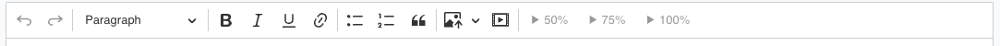
| 단추 | 하는 일 |
|---|---|
| ↺ ↻ | 방금 한 것을 되돌리기 / 다시하기 |
| Paragraph ▾ | 글자를 제목(큰 글씨)으로 바꾸기 |
| B · I · U | 굵게 · 기울임 · 밑줄 |
| 🔗 | 글자에 인터넷 주소(링크) 걸기 |
| ≔ · ≔ · ❝ | 점 목록 · 번호 목록 · 인용구 |
| 🖼 (사진) | 글 안에 사진 넣기 (사진을 끌어다 놓아도 됩니다) |
| ▶ (동영상) | 유튜브 주소를 넣으면 영상이 들어갑니다 |
| 50% · 75% · 100% | 사진 · 영상의 너비(크기) 고르기 |
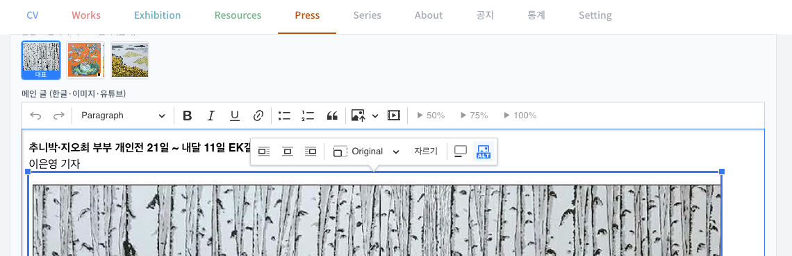
사진에서 원하는 부분만 남기고 잘라낼 수 있습니다.
원본 사진은 그대로 보관됩니다. 그래서 마음에 안 들면 다시 ‘자르기’를 눌러 되돌리거나 다시 자를 수 있습니다. 화질도 나빠지지 않습니다.
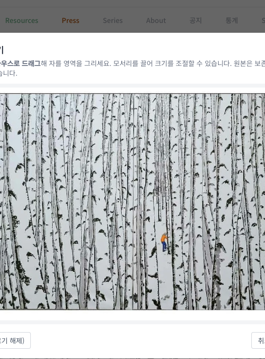
위쪽 메뉴를 왼쪽부터 오른쪽 순서로 하나씩 설명합니다.
학력 · 레지던시 · 소장처 · 수상 같은 경력을 적는 곳입니다.
※ 홈페이지에서는 연도가 최근 것부터 저절로 정렬되어 보입니다. 순서를 신경 쓰지 않고 적어도 됩니다.
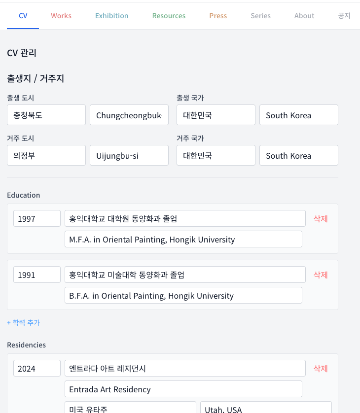
작품 사진을 올리고, 고치고, 정리하는 곳입니다.
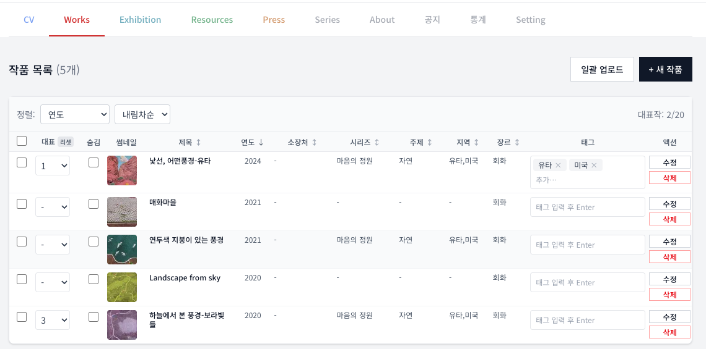
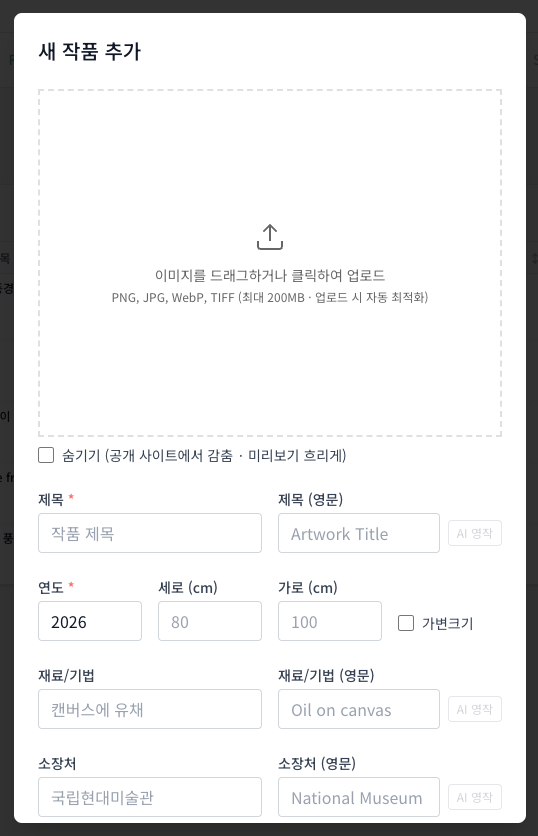
사진 파일 이름을 「제목 100x80 재료 2024」 처럼 지어 두면, 올릴 때 제목 · 크기 · 재료 · 연도가 자동으로 채워집니다. (한글 이름은 한글 칸에, 영어 이름은 영어 칸에 들어갑니다.)
여러 작품을 올릴 때는 같은 시리즈 · 같은 주제 · 같은 지역인 작품끼리 모아서 올리세요.
그러면 위쪽 ‘공통 분류’ 칸에 한 번만 적어도 그날 올리는 모든 작품에 똑같이 들어갑니다.
나중에 작품을 하나하나 찾아 분류를 넣을 필요가 없어 시간이 크게 절약됩니다.
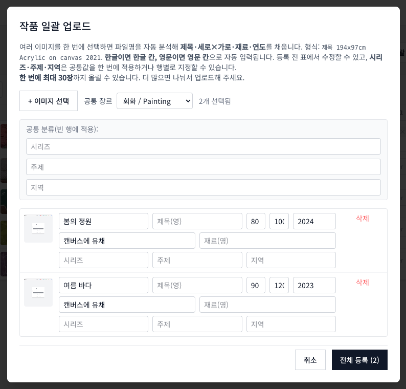
작품을 하나씩 빠르게 연달아 지우면, 일부가 다시 살아날 수 있습니다.
여러 개를 지울 때는 이렇게 하세요:
한 개만 지울 때는 그 작품의 ‘삭제’ 단추를 써도 됩니다. (자세한 이유는 부록 A를 보세요.)
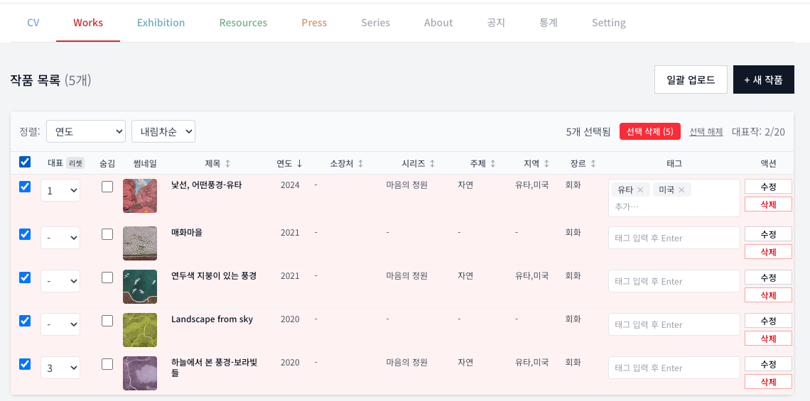
전시 정보를 올리는 곳입니다.
맨 위 ‘네오룩에서 가져오기’ 칸에 네오룩 전시 기사 주소를 넣고 ‘가져오기’를 누르면, 제목 · 장소 · 기간 · 본문 · 사진이 저절로 채워집니다. 채워진 내용을 확인하고 저장하면 됩니다.
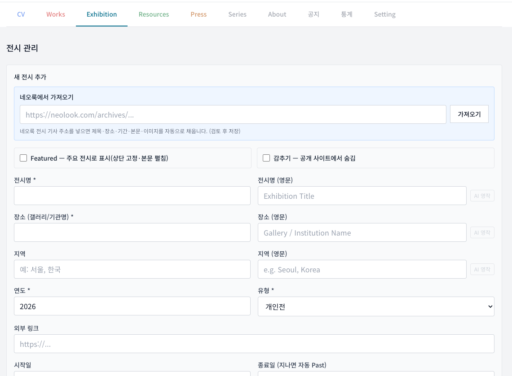
작업 과정(Process)이나 글(Writings)을 올리는 곳입니다.
※ 영어 글은 홈페이지에서 한글 글 아래에 이어서 보입니다.
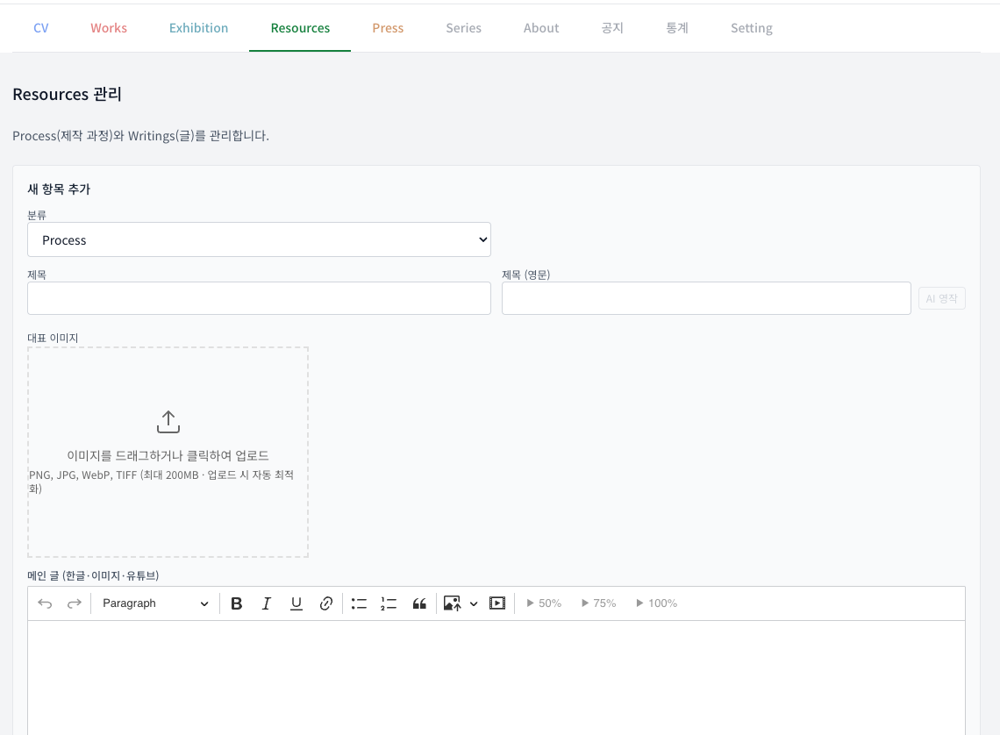
신문기사(Articles)나 방송(Broadcasts)을 올리는 곳입니다.
맨 위 ‘스캔 신문기사 자동 변환’ 칸에 신문 스캔 사진을 끌어다 놓으면, AI가 제목 · 본문(한글·영어) · 기사 속 사진 · 전시정보를 저절로 뽑아 채워줍니다. 채워진 내용을 확인하고 고친 뒤 저장하면 됩니다.
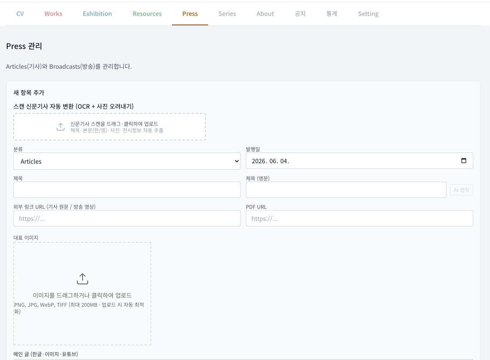
작품을 묶는 폴더는 따로 만들지 않습니다. 작품에 적은 시리즈 · 주제 · 지역 값에서 폴더가 저절로 생깁니다. 이 화면에서는 그 폴더의 이름 · 순서 · 숨김만 다듬습니다.
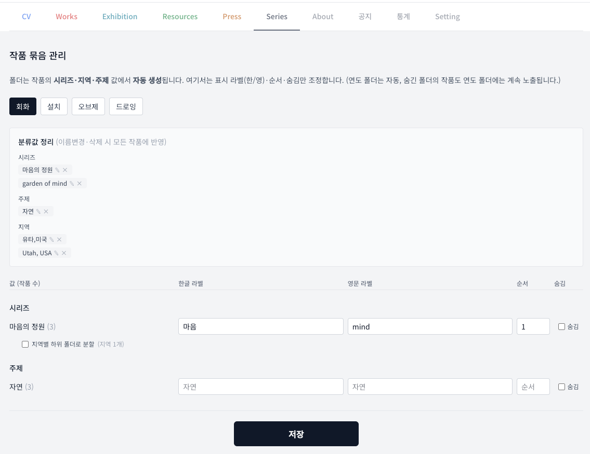
화면 위 ‘분류값 정리’에서 시리즈·주제·지역 이름을 ✎(이름 바꾸기) 또는 ×(지우기) 할 수 있습니다.
여기서 분류값 옆 ×를 누르면, 그 값은 같은 값을 쓰는 다른 모든 작품에서도 동시에 지워집니다. (한 작품에서만 지워지는 것이 아닙니다.)
이름 바꾸기(✎)도 마찬가지로 모든 작품에 한꺼번에 반영됩니다.
한 작품의 분류만 바꾸고 싶을 때는, 이 화면이 아니라 Works에서 그 작품을 ‘수정’해 값을 비우세요.
하나의 시리즈 폴더 안을, 작품에 적은 지역에 따라 작은 하위 폴더로 나눠 보여주는 기능입니다.
예를 들어 보겠습니다. ‘미국서부’라는 시리즈에 작품 12점이 있고, 각 작품에 지역으로 ‘애리조나’ 또는 ‘캘리포니아’를 적었다고 합시다.
| 설정 | 홈페이지에서 보이는 모습 |
|---|---|
| 체크를 끄면 | ‘미국서부’ 폴더 하나에 12점이 그냥 한꺼번에 보입니다. |
| 체크를 켜면 | ‘미국서부’에 마우스를 올리면 옆으로 ‘애리조나’ · ‘캘리포니아’ 두 폴더가 펼쳐지고, 지역별로 나뉘어 보입니다. |
작가 이름 · 소개글 · 프로필 사진 · 연락처 · SNS 주소를 적는 곳입니다.
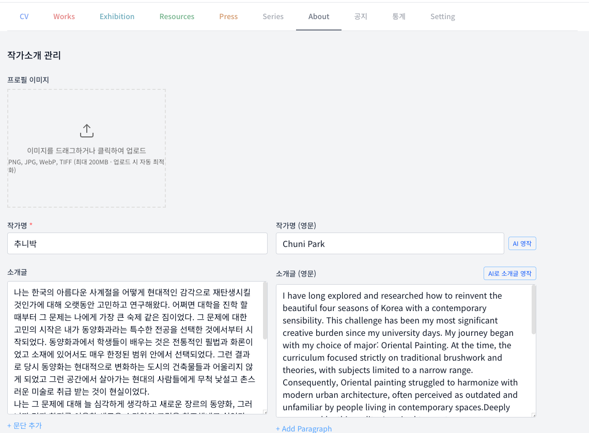
홈 화면을 열 때 뜨는 팝업 알림창을 만드는 곳입니다. 최대 2개까지 만들 수 있습니다.
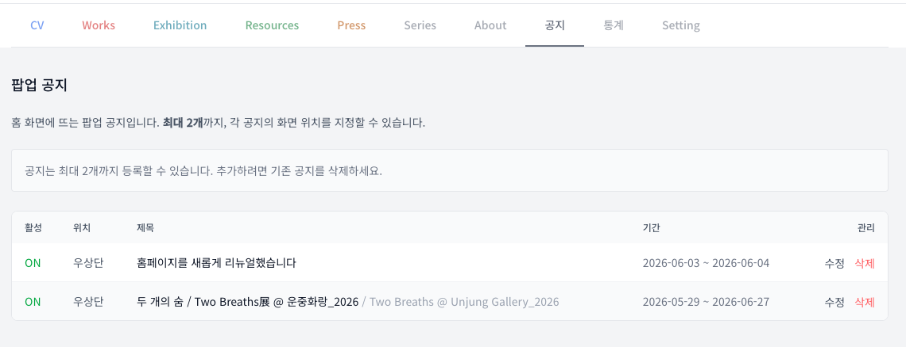
홈페이지를 몇 명이 봤는지 보는 곳입니다. 따로 입력할 것은 없습니다.
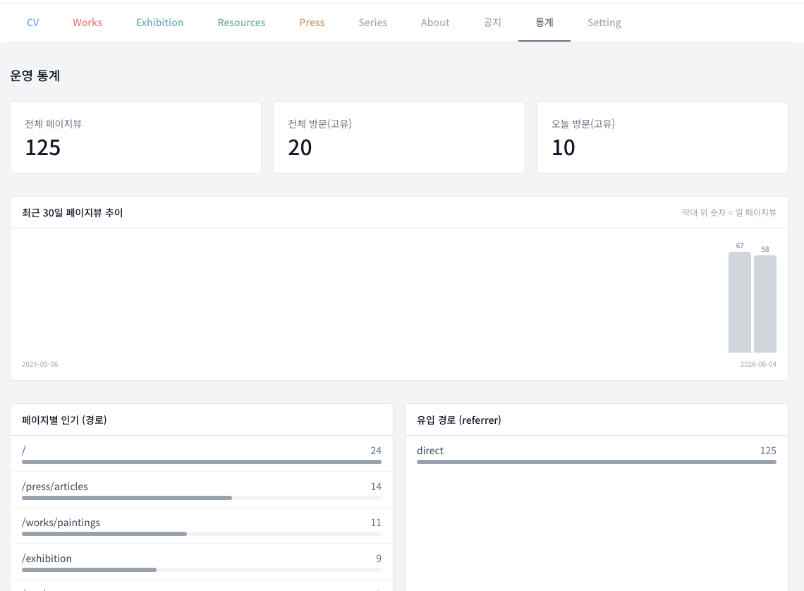
관리자 비밀번호를 바꾸는 곳입니다.
저장 후 새 비밀번호가 실제로 쓰이기까지 최대 1분 정도 걸립니다. 1~2분 기다린 뒤 새 비밀번호로 로그인하세요.
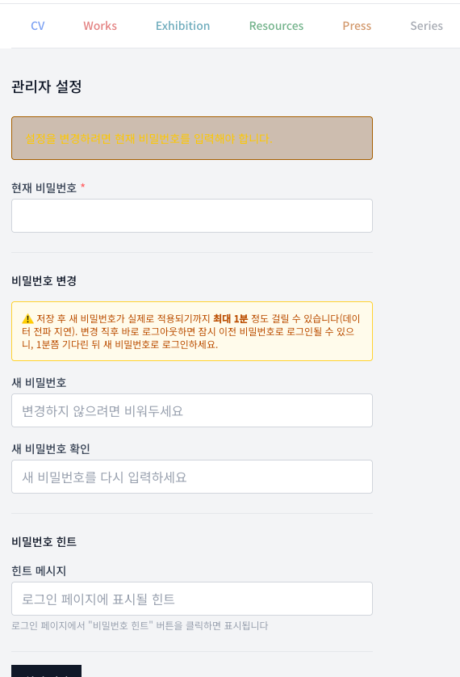
아래 표를 ‘이런 일이 생기면 → 이렇게 하세요’ 순서로 보시면 됩니다.
| 이런 일이 생겨요 | 왜 그런가요 | 이렇게 하세요 |
|---|---|---|
| 저장했는데 홈페이지가 그대로예요 | 저장한 내용이 홈페이지에 퍼지는 데 1분쯤 걸립니다. | 1~2분 기다린 뒤 Ctrl+Shift+R (또는 Ctrl+F5)을 누릅니다. |
| 여러 개를 지웠는데 일부가 다시 살아났어요 | 하나씩 빨리 지우면, 저장이 퍼지기 전 옛 목록을 다시 읽어 지운 것이 되살아납니다. | 여러 개는 왼쪽 네모로 고른 뒤 ‘선택 삭제’ 한 번으로 지웁니다. |
| 사진을 30장 넘게 못 올려요 | 한 번에 최대 30장까지만 됩니다. | 30장씩 나눠서 올립니다. (한 묶음 올린 뒤 다음 묶음) |
| 사진이 너무 커서 안 올라가요 | 한 장이 200MB를 넘으면 못 올립니다. | 사진을 조금 줄여서 올립니다. (인터넷 ‘사진 용량 줄이기’ 사이트 이용) |
| 사진 올릴 때 시간이 오래 걸려요 | 올리기 전에 사진을 알맞은 크기로 줄이는 중입니다. (정상) | 그냥 기다리시면 됩니다. 보통 몇 초~30초입니다. |
| ‘AI 영작’이나 ‘스캔’이 “사용량 초과”라고 떠요 | AI를 짧은 시간에 너무 많이 쓰면 잠깐 막힙니다. | 1~2분 뒤 다시 누릅니다. 자주 그러면 개발자에게 알려 주세요. |
| 비밀번호를 바꿨는데 로그인이 안 돼요 | 바뀐 비밀번호가 적용되는 데 1분쯤 걸립니다. | 1~2분 기다린 뒤 새 비밀번호로 다시 로그인합니다. |
| 비밀번호가 생각이 안 나요 | 비밀번호는 안전하게 숨겨져 있어 되찾을 수 없습니다. | 로그인 화면에서 ‘비밀번호를 잊으셨나요?’ → 등록 이메일로 임시 비밀번호를 받습니다. |
| 갑자기 로그인 화면으로 튕겼어요 | 오래 두면 로그인이 자동으로 풀립니다. | 다시 로그인하면 됩니다. |
| 지울지 숨길지 헷갈려요 | 숨김은 잠깐 가리는 것, 삭제는 완전히 없애는 것입니다. | 나중에 다시 쓸 거면 숨김, 영영 없앨 거면 삭제를 씁니다. (삭제는 되돌릴 수 없습니다.) |
인터넷 화면은 빠르게 보이려고 옛 화면을 잠깐 저장(캐시)해 둡니다. 그래서 바뀐 내용이 안 보일 때가 있습니다. 이때 Ctrl+Shift+R 을 누르면 옛 화면을 버리고 새 화면을 받아옵니다.
화면에서 만나는 낯선 말들을 쉬운 말로 풀었습니다.
| 용어 | 쉬운 뜻 |
|---|---|
| 로그인 | 비밀번호를 넣어 관리자 화면에 들어가는 것. |
| 저장 지연 | 저장한 내용이 홈페이지에 보이기까지 1분쯤 걸리는 것. 정상입니다. |
| 강제 새로고침 | 옛 화면을 버리고 새 화면을 받는 것. Ctrl+Shift+R |
| 대표작 | 홈 화면 앞쪽에 크게 보여줄, 골라 둔 작품. |
| 숨김 | 지우지 않고 홈페이지에서만 잠깐 가리는 것. 체크를 풀면 다시 보입니다. |
| 시리즈 / 주제 / 지역 | 작품을 묶는 이름표. 이 값에서 홈페이지 폴더가 저절로 생깁니다. |
| 지역별 하위 폴더 분할 | 한 시리즈 폴더를 ‘지역’으로 더 잘게 나눠 보여주는 기능. |
| 장르 | 작품의 큰 갈래 — 회화 · 설치 · 오브제 · 드로잉. |
| Special / Featured 전시 | 맨 위에 크게 고정해 보여주는 주요 전시. |
| Press | 신문기사 · 방송 같은 언론 소개. |
| Resources | 작업 과정 · 글 같은 자료 글. |
| 편집기 | 글과 사진을 함께 넣어 본문을 쓰는 글쓰기 칸. |
| 자르기(크롭) | 사진에서 원하는 부분만 남기고 잘라내는 것. 원본은 보관됩니다. |
| 캡션 | 사진 아래에 다는 작은 설명 글. |
| AI 영작 | 한글을 영어로 자동 번역해 주는 단추. |
| 스캔(OCR) | 사진 속 글자를 읽어 글로 바꿔 주는 기능. |
| 태그 | 작품에 다는 꼬리표 단어. |
| 썸네일 | 목록에 작게 보이는 미리보기 사진. |
| Cloudinary / Vercel / Blob | 사진과 글을 안전하게 보관하는 인터넷 창고들의 이름. 직접 신경 쓰지 않아도 됩니다. |